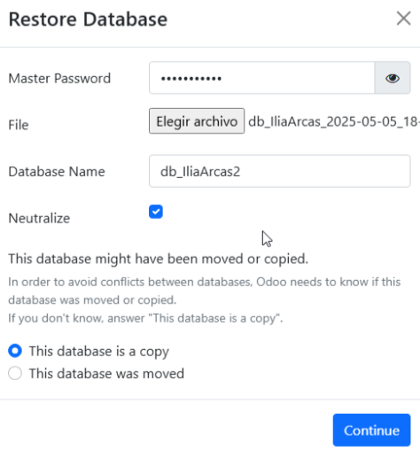

Nos vamos en el apartado de Odoo 16 y descargamos el Windows Community
Cuando le damos al instalar nos pedirá a rellenar esto
Comenzamos con el proceso de instalación
Seleccionamos el idioma
Le damos a Next para continuar
Le damos a I Agree
Seleccionamos Server y Database
Rellenamos los datos como podéis ver en la imagen
Le damos al instalar
Una vez que se acaba de instalar le damos a Next
Finalizamos
Ahora, desde el navegador, buscamos localhost:8096 y nos llevará a esta página para crear la BBDD
Una vez creada la BBDD, accedemos a Odoo con nuestro correo y contraseña
Backup
Para hacer el backup tenemos que acceder a http://localhost:8069/web/database/manager y pulsar “Backup”
Después nos aparecerá el panel para hacer el backup donde ponemos la Master Password y seleccionamos ZIP
Para restaurar, volvemos al mismo panel, pulsamos “Restore”, insertamos la Master Password, elegimos el ZIP y escribimos el nombre de la nueva BBDD
Módulo de inventario
Esta es la página de introducción al módulo

Un módulo de inventario es esencial en la mayoría de PYMEs para gestionar productos físicos, controlar gastos y mejorar la logística
Para instalarlo, accedemos al panel de módulos, lo buscamos y pulsamos “Instalar”
Las funcionalidades del módulo son:
Dar de alta productos con información relevante
Gestión de entradas, salidas y transferencias internas
Ajustes de inventario para actualizar cantidades manualmente
Declarar ubicaciones físicas para mejor control
Para dar de alta un producto, accedemos a “Productos” y pulsamos “Nuevo”
Aquí configuramos nombre, tipo, precio, cantidad, etc.
También podemos definir políticas de envío y responsable
Podemos añadir notas internas
Y personalizar etiquetas de envío
Módulo de Gastos
La aplicación de Gastos en Odoo permite gestionar y reembolsar los gastos de empleados de forma eficiente. Ofrece:
Registro de gastos con comprobantes
Flujo de aprobación
Reembolsos automáticos
Integración contable
Informes por empleado o proyecto
Integración con Proyectos y Ventas
Buscamos la aplicación Gastos y la activamos
Entramos al módulo y pulsamos “Nuevo”
Rellenamos título, categoría, importe, empleado y adjuntamos recibo
Cuando todo esté, clic en “Crear informe”
Enviamos el informe al Gerente
El Gerente revisa y aprueba o rechaza el gasto
Pulsamos “Registrar asientos contables” para integrarlo en contabilidad
Pulsamos “Registrar pago” y seleccionamos la forma de pago
Vemos el gasto marcado como pagado
Vista de lista de gastos con estado “Pagado”
Conclusiones
La instalación de Odoo 16 Community ha resultado sencilla y rápida, siguiendo los pasos de descarga, configuración de base de datos y selección de componentes.
El módulo de Inventario muestra gran versatilidad para gestionar productos, ubicaciones y ajustes de stock, facilitando el control logistico en una PYME.
El módulo de Gastos agiliza el registro, aprobación y reembolso de gastos de empleados, integrando automaticamente la contabilidad y generando informes detallados muy utiles para las empresas que estan naciendo.
La funcionalidad de backup y restauración ofrece buena seguridad ante cualquier incidencia.
En conjunto, Odoo demuestra ser un buen eRP, potente y adaptable a las necesidades de las pequeñas empresas.